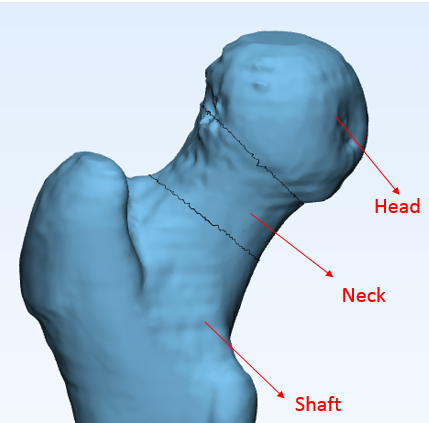

2. Measurements¶
In this tutorial basic measurement operations are presented using the project Femur.mxp that is located in the 3-matic installation folder under the folder DemoFiles.
The first step of the script is to open the project from the installation folder, then assign variables to the parts and define the view. The completed script can be found in the 3-matic installation folder: DemoFiles\scripts\Measurements.py.
#Open project, find part and set view.
application_exe = trimatic.get_application_path()
application_path = os.path.dirname(application_exe)
project_filename = application_path + "/DemoFiles/Femur.mxp"
trimatic.open_project(project_filename)
view_vector=[0.48249295353889465, -0.874954879283905, 0.040668144822120667]
up_vector==[0, 0, 1]
trimatic.view_custom(view_vector, up_vector)
femur = trimatic.find_part("femur")
The next portion of the script is to manually mark the femur head, the neck and the femur shaft. The users are prompted with a message box with instructions of which area to mark and to create the corresponding surfaces. The image below displays the “head”, “neck” and “shaft” portions.
{kind=link}
#Mark the different areas and create the corresponding surfaces.
trimatic.message_box(message="Mark the triangles of the femur's head using Mark-> Brush Mark -> Wave Brush Mark and click OK. To make sure that the triangles are marked through the selected area, hold the **SHIFT** button while selecting." , title= "Marking Head")
head_marked_triangles=trimatic.get_selection()
head_surface= trimatic.move_to_surface(head_marked_triangles)
trimatic.message_box(message="Mark the triangles of the femur's shaft using Mark-> Brush Mark -> Wave Brush Mark and click OK. To make sure that the triangles are marked through the selected area, hold the **SHIFT** button while selecting." , title= "Marking Shaft")
shaft_marked_triangles=trimatic.get_selection()
shaft_surface= trimatic.move_to_surface(shaft_marked_triangles)
trimatic.message_box(message="Select the surface of the neck in the object tree to define the variable and click OK. Make sure the Wave Brush tool is closed upon selection of the surface.", title="Define Neck Surface")
neck_surface= trimatic.get_selection()
In the next step, an analytical sphere is created around the surface of the head with the fit sphere method. Then, two lines are fitted in the created surfaces of the femoral neck and shaft respectively with the fit ruled surface method. To check if the analytical entities present are in the correct positions, set the femur to high transparency.
# Create an analytical sphere and fit lines
head_sphere = trimatic.create_sphere_fit(head_surface)
neck_line = trimatic.create_line_fit_ruled_surface(neck_surface)
shaft_line = trimatic.create_line_fit_ruled_surface(shaft_surface)
femur.transparency=0.5
{kind=link}
The last step is to print the radius of the fitted sphere to the femoral head in the logger. The angle between the line of the neck and shaft is also calculated and printed.
# print the radius of the head of the sphere
print("Radius of the femur head is ",head_sphere.radius)
print("\n \n")
# Calculate the angle between the neck and the femur and print the value
femurangle = trimatic.create_angle_measurement_line_to_line(shaft_line,neck_line)
print("Angle between femur neck and femur shaft is ",femurangle.value)
{kind=link}